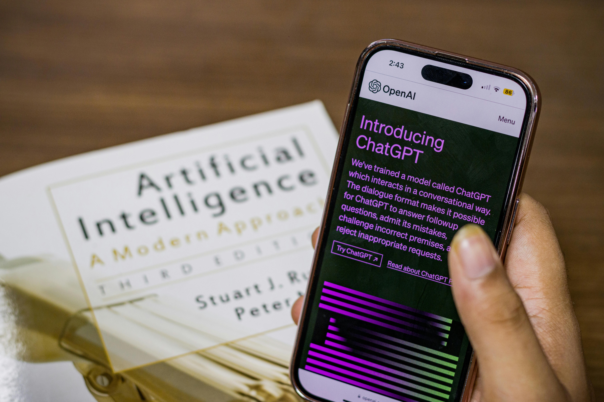
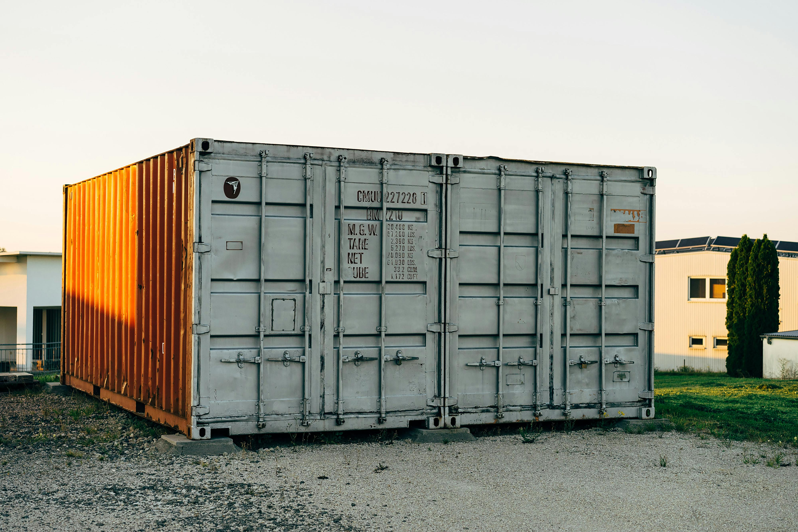

“I am Kofi Mensah, a Cloud Engineer and DevOps professional with experience in designing and maintaining cloud infrastructure, implementing CI/CD pipelines, and automating deployment workflows. I am passionate about leveraging tools like AWS, Docker, and Terraform to build efficient, scalable, and secure solutions. My goal is to continuously grow as a cloud and DevOps engineer while delivering impactful projects.”
Skills
Experience
Education


© 2026 Kofi Mensah. All rights reserved. Designed and developed by Kofi Mensah.